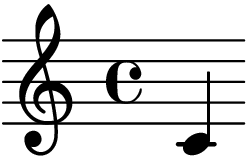

我如何用 Sphinx 建立笔记系统（二）系统架构#
提示
这是 我如何用 Sphinx 建立笔记系统 系列的第 二 篇，你可以通过订阅 RSS 来获取后续更新。
截至目前，我的笔记系统看起来是这样子的（使用 📦 sphinxcontrib-plantuml 生成）：
![folder "Git 仓库" as repo {
file "Sphinx 配置"
file "reStructuredText 文档" as rst
file "HTML 文档" as html
}
package "Sphinx" as sphinx {
component "Snippet 扩展" as snippet.ext
}
sphinx -u-> html: 输出
rst -u-> sphinx: 构建
cloud pages.github as "Github Pages（主站）"
cloud pages.gitee as "Gitee Pages（镜像）"
repo -u-> pages.github: Github Action
pages.github -> pages.gitee: Github Action
file "Snippet 索引" as snippet.cache
agent "Snippet 命令行工具" as snippet.cli
snippet.cli .u.> snippet.cache: 读取
snippet.ext .d.> snippet.cache: 写入
snippet.cli -u-> html: 浏览
snippet.cli -u-> rst: 浏览，编辑
node shell as "Z Shell"
node editor as "Neo(vim)"
shell -u-> snippet.cli: 浏览，编辑
editor -u-> snippet.cli: 浏览，编辑](../_images/plantuml-5c74529f9be50374765238d71047a84182c63b58.png)
笔记系统架构#
Git#
我用 Git 仓库来管理整个 Sphinx 项目的版本，用 GitLFS 管理图片资源（后来因为 gitee 不支持又去掉了），仓库沿用之前建立的 ⛺ SilverRainZ/bullet。
一般来说 Sphinx 文档都会托管到 ReadTheDocs，但出于部署和访问的方便，我基于 GitHub Action 写了 ⛺ sphinxnotes/pages，用来自动部署到 GitHub Pages，并使用 ⛺ spyoungtech/mirror-action 和 ⛺ yanglbme/gitee-pages-action 建立了国内的 Gitee 镜像。
小技巧
Github 和其他托管平台会在 Languages 统计时忽略常见的 Markup Languages（如 Markdown、restructuredText），为了让它能被统计 ，可以建立 .gitattributes 文件加入以下内容 [1]
*.rst linguist-detectable=true
在 GitHub 上可以看到 reStructuredText 被正确统计了：

⛺ SilverRainZ/bullet 的 Languages 统计#
Neo(Vim)#
我用 Neovim 搭配各种插件编写 reST 文档，关于如何在舒服地用 (Neo)Vim 写 reST，我会再写一篇文章展开。
从终端和 Vim 快速访问#
浏览器、Vim 和终端模拟器是我最常待的 Workspaces，前者当然可以方便的访问 Sphinx 生成的 HTML 文档，为了满足从后两者操作文档的需求，我写了 📦 sphinxnotes-snippet ，包含一个 Sphinx 的扩展和一个命令行工具，你可以在刚才的架构图上看到它的角色。
- Snippet 扩展
会在构建文档的时候：
自动提取文档片段：标题、代码、图片、段落等
中英文分词
简单地 normalize
提取关键字
中文转化为拼音
建立到文档的 索引
然后保存在磁盘上待检索。
扩展本身是「非侵入性」的，不需要用特定的格式编写文档，而是根据 reST 的文档树（doctree）进行提取
- Snippet 命令行工具
提供了简洁的命令行接口用以访问上述的 索引 ，基于此在 Zsh 和 Neovim 上实现了对应的插件：
（在 Zsh 或者 Neovim 里）按下快捷键 C-k，后续一个按键给出操作方式，目前支持： v 浏览、e 编辑、u 打开 URL
在 Fzf 中输入关键词以筛选文档片段，支持拼音
对你选中的文档片段执行指定操作
在这之前我「检索外脑」的延迟为 数十秒 ，根据所在 Workspace 的不同有不同的操作：
- 在浏览器
打开主站或者 Gitee 镜像
根据记忆中的笔记结构一层层点进去
使用 Sphinx 的内建搜索
备注
事实上 Sphinx 内建的搜索不支持中文分词，因此实用程度基本为零
- 在 Vim
根据记忆中的笔记结构，打开 NERDTree 的侧边栏一层层展开
- 在终端
cd到笔记所在目录执行grep -r 关键字，然而我的笔记中文内容居多 （一段时间内我甚至在考虑要不要用英文记笔记方便检索）根据记忆中的笔记结构一层层
cd进去，用 Vim 浏览
在使用 Snippet 后这一过程可以压缩到一秒内：
- 在浏览器
切换到 Vim 或者终端
- 在 Vim
唤醒 Snippet，输入关键词（使用 📦 sphinxcontrib.asciinema 生成）
- 在终端
唤醒 Snippet，输入关键词
这一时间的压缩让「记录一些偶尔用又总记不住的命令」有了实用价值：比开 Google 快了许多，更别提梯子挂了时候，命令就在嘴边又记不清的难受劲儿。
此外，编辑笔记的时候也不需要进到 git 仓库里一层一层找文件了，一步直达。
关于 Snippet 的使用，我也会再写一篇文章展开，配合其他工具有非常多的玩法。
描述、引用和索引#
一个对象的描述，通常可以抽象为 Key-Value list，特别地，对象的名字和介绍是两个特殊的 Key。reST 中的 Directives 就能够用来写这样的描述：假设我们有一个名为 book 的 directive，尝试用它来描述一本书:
.. book:: 德米安
:ISBN: 9787509365786
:作者: 黑塞
我读过这本书，但好像又跟没读一样。
但 Sphinx 其实并不存在这样的 directive ，它无法被正常地渲染成文档。
而 📦 sphinxnotes-any 就是用来做这种事情的：它根据你的配置生成 directives 来描述任意对象，所有的对象都会被保存在一个叫 “any” 的 Domain （理解为命名空间）中，对应的交叉索引用的 role 也会生成，这么说可能有些抽象，我拿用来描述一张画的 artwork directive 来举个例子:
.. artwork:: Bell Rock Lighthouse
:id: test-1
:medium: 水彩 铅笔
:date: 1819
:size: 8k
:image: /_images/800px-Joseph_Mallord_William_Turner_-_Bell_Rock_Lighthouse_-_Google_Art_Project.jpg
随便找的一张 :zhwiki:`透纳` 的画。
会在文档中产生如下内容：

备注
可以看到生成的内容比 directive 里写的携带了更多的信息，这其实是 Jinja Template 带来的。
现在你可以用 artwork 系列的 role 来索引这张画：
根据名字索引 |
|
|
根据 ID 索引 |
|
|
更精确一点 |
|
|
所有水彩画 |
|
|
所有媒介 |
|
我现在用这个扩展来管理我的 读书笔记、习作、艺术家记录、友情链接。关于它如何工作，它还能怎么玩，也会有单独的文章来说明。
博客#
博客是最难办的一件事情，单纯靠安排笔记的排版确实可以让它看起来像一个博客，但关键的目录、标签、归档、评论功能统统都没有。好在这件事情已经有人做了，并且非常符合 Sphinx 的哲学。
👥 sunpy 社区写了一个叫 📦 ablog 的扩展，用来在 Sphinx 里建立博客，保持兼容最新版的 Sphinx 为目标，开发也非常活跃。你可以看看 ABlog 在我的笔记系统上的效果：Posts
ABlog 支持 Disqus 评论，如果你想用 Self-hosted 的 Isso 的话，可以试试我写的 📦 sphinxnotes-isso，文章底部可以看到 Isso 的评论框。
值得一提的是，Sphinx 生成的 HTML 文档里的侧边栏不是全局的，可以让不同的页面采用不同的侧边栏，因此 ABlog 引入的博客侧边栏不会影响现有的其他的文档：

左：默认 sidebar，右：博客 sidebar#
备注
比较遗憾的是，之前使用的 sphinx_rtd_theme 并不听 Sphinx 的 sidebar 配置 只能换成了默认的 Alabaster theme
其他扩展#
备注
这里仅列出我正在使用的扩展及其效果，想了解它们的具体配置，请看 conf.py ，也许我会写一篇文章里来它们的使用技巧。
- 📦 sphinxnotes-lilypond
用来显示音符

和 带试听音频的乐谱- 📦 sphinxnotes-strike
提供了
delrole 用来显示 reST 不支持的删除线:del:`Sphinx`Sphinx
- 内置扩展
sphinx.ext.extlink 来方便地生成外部链接
:ghuser:`SilverRainZ`- ⛺ executablebooks/sphinx-design
提供了 reST 不支持的分栏功能（见下），顺便还享用了它内置的 Font Awesome 支持
- 内置扩展
sphinx.ext.graphviz 用 Dot Language 绘制简单的流程图：
reST.. digraph::: dot Alice -> Bob
效果
- 📦 sphinxcontrib-plantuml
用 Plant UML 绘制各种图表：
reST.. uml:: [Alice] -> [Bob]
效果![[Alice] -> [Bob]](../_images/plantuml-e520c685b207a87c1a70a97feb6aa80696f9b0c4.png)
- 📦 sphinxcontrib.email
生成难以被爬虫抓取的邮件地址，防止 SPAM
:email:`foo@example.com`- 📦 sphinxcontrib.asciinema
在文档中嵌入 asciinema 录制的终端操作：
.. asciinema:: 117813
效果：
- 内置扩展
sphinx.ext.githubpages 用于生成部署 GitHub Pages 的
.nojekyll文件- 内置扩展
sphinx.ext.intersphinx 非常有意思的扩展，允许在引用其他 Sphinx 文档的 Domain ，可惜现在没有这个需求
- 📦 sphinxcontrib.gtagjs
在页面中嵌入 Google Analytics 代码
- 📦 sphinx_sitemap
生成 📖 站点地图 以优化搜索引擎排名
脚注
如果你有任何意见，请在此评论。 如果你留下了电子邮箱，我可能会通过 回复你。